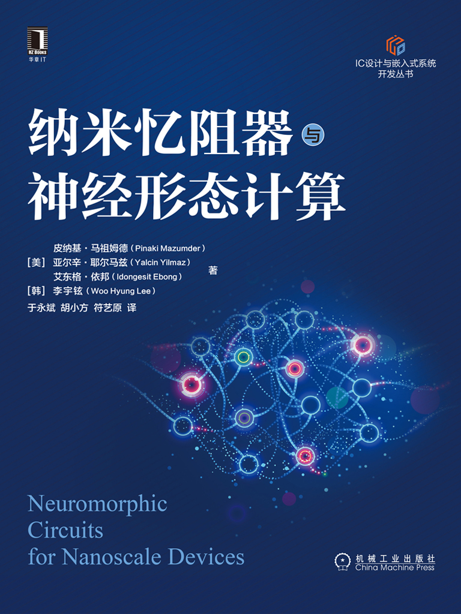

𝑪𝒉𝒆𝒏𝒈 𝑯𝒖𝒂𝒏𝒈, 𝑷𝒉.𝑫. 🍊
✨ I have gotten the Ph.D. degree from Southern Methodist University on November 18, 2025. Prior to that, I got my master's degree from the Chinese University of Hong Kong in 2022. And I obtained the bachelor's degree from University of Electronic Science and Technology of China in 2020.
✨✨✨ I am the first and also currently the only person in SMU history to complete the Ph.D. program in just two years! ✨✨✨
My long-term vision is to advance AI for Health Care by building clinically grounded, trustworthy, and multimodal intelligence systems. I frame this mission through the Hippocrates paradigm:
(1) Biomarker Intelligence
Discovering disease-specific biomarkers from multimodal medical data, like fundus, OCT, OCTA, and clinical metadata—through robust and interpretable AI.
(2) Clinically Aligned Generation
Developing multimodal report-generation and decision-support models that integrate imaging, physiology, and language to produce clinically reliable outputs.
(3) Autonomous Diagnostic Systems
Building agentic medical AI systems with reasoning, memory, and self-improving capabilities to support longitudinal disease progression modeling and early intervention.
|
|
News
- [2025/11]🥳🥳🥳 I successfully defended Ph.D. dissertation.
- [2025/11]🔥🔥🔥 1 paper was accepted by IEEE 19th BIBM!
- [2025/10]🔥🔥🔥 We have just released the survey: Tibetan Language and AI: A Comprehensive Survey of Resources, Methods and Challenges.
- [2025/09]1 paper was accepted by IEEE 25th BIBE!
- [2025/08]🚀🚀🚀 1 paper was accepted by EMNLP 2025!
- [2025/07]🔥🔥🔥 1 paper was accepted by ICONIP 2025!
- [2025/05]🥳🥳🥳 I was selected as the outstanding graduate student of the Department of computer science!
- [2025/05]🥳🥳🥳 I passed my mid-term PhD defense!
- [2025/04]🔥🔥🔥 2 papers are accepted by IEEE 47th EMBC
- [2025/03]1 paper is accepted by IEEE Journal of Systems Engineering and Electronics!
- [2024/11]🥳🥳🥳 I have passed my Ph.D. qualifying exams and am now a Ph.D. candidate rather than a Ph.D. student.
- [2024/11]1 paper is accepted by IEEE ICNC 2024.
- [2023/12]🔥🔥🔥 2 papers are accepted by AAAI 2024 and its Workshop.
- [2023/12]1 paper is accepted by Applied and Computational Engineering and is selected as the cover paper.
- [2023/08]🚀🚀🚀 Book "Neuromorphic Circuits for Nanoscale Devices (纳米忆阻器与神经计算)" has been published (ISBN: 9787111704119).
- [2023/07]🔥🔥🔥 1 paper is accepted by IEEE ICTAI 2023.
- [2022/12]1 paper is accepted by Biomedical Signal Processing and Control.
- [2022/05]🚀🚀🚀 1 paper is accepted by IEEE Transactions on Instrumentation and Measurement and is selected as the cover paper.
- [2021/06]🚀🚀🚀 2 papers are accepted by IEEE PRAI 2021 and both of them won the Excellent Presentation Award.
- [2020/08]1 paper is accepted by IEEE CDS 2020.
- [2020/07]1 paper is accepted by IEEE ICVRV 2020.
- [2020/07]1 paper is accepted by ACM ICRAI 2020.
- [2020/05]🔥🔥🔥 1 paper is accepted by IEEE 20th ICCT 2020.
Education |
|
|
|

|
|
|
|
|

|
|
Principal Investigator (PI) & Co-PIProject: Federated Learning Alignment Method under Multi-Type Data Distribution (2022KQNCX084) Category: Guangdong Province Higher Education Youth Innovation Talent Project - Natural Science Role: Co-PI, with Dr. Siyang Jiang Description: A study on developing alignment methods in federated learning to address challenges posed by heterogeneous data distributions across clients, including differences in features, labels, and modalities. |
Academic ServiceCommittee: IEEE PRAI'25, AAAI'26 Conference Reviewer: CVPR'25, MICCAI'25, ICME'25/26, IEEE PRAI'25, IEEE BIBE'25, ICONIP'25, IEEE EMBC'26, AAAI'26 Journal Reviewer: IEEE Journal of Translational Engineering in Health and Medicine, American Journal of Diagnostic Imaging, Journal of Computer Sciences and Informatics, The Journal of Supercomputing |
Interview & Talk |
|
|
Internship & Full-Time |
|
|
|
|
|
|
|
|
|

|
|
Benchmark & DatasetTibetan NLP Benchmark: -> TLUE: the First Benchmark for Evaluating Tibetan LLM proficiency Dataset: -> TIB-STC: the First and the Currently Largest Structured Tibetan Dataset for Low-Resource Language Modeling -> TIBSTC-CoT: the First and the Currently Largest Multi-Domain Instruction Dataset for Chain-of-Thought Reasoning in LLMs Financial Crime Dataset: -> IFD: the First and the Currently Largest Insider Filing Delay Dataset for Financial Crime Classification Glaucoma AI Dataset: -> RetinaMix: the Advanced High-Resolution OCTA Dataset With Integrated 2D and 3D Glaucoma Imaging |
Specialized LLMTibeta Culture -> Sun-Shine: the First Foundation LLM for Tibetan Culture and Heritage -> Sun-Shine 2.0: the First Tiberan LLM for Reasoning and Thinking |
Publication (Selected) |
|

|
Neuromorphic Circuits for Nanoscale Devices (纳米忆阻器与神经计算)
Yongbin Yu, ... Cheng Huang, ... CHINA MACHINE PRESS, 2023 ISBN: 9787111704119, Book This book explores the design and application of neuromorphic circuits for nanoscale devices, with a focus on nanoscale memristors and neural computing. |
Personal InterestHobby: Skiing, Fitness, Off-Roading, Hunting, Traveling 我还在寻找属于我自己的那朵花...至少现在是这样。 |
|
My hometown is Guangan, Sichuan China, you can call me nickname: Yellow Orange.
This awesome template is inspired from this good man.
|